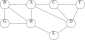

Consider the following input to the fractional knapsack problem (as in Section 16.2), for a knapsack that can hold at most \(W=50\) pounds:
| \(i\) | 1 | 2 | 3 | 4 | 5 |
|---|---|---|---|---|---|
| \(v_i\) | 9 | 5 | 7 | 12 | 3 |
| \(w_i\) | 18 | 15 | 28 | 50 | 6 |
Give a step-by-step explanation of how the greedy algorithm from Section 16.2 would solve this problem, showing values at each step and the final answer computed by the algorithm.
Consider a company that has \(n\) customers, who they want to keep happy by distributing gifts to each customer. There are exactly \(n\) gifts available, with values \(V=\langle v_1, v_2,\ldots,v_n\rangle\). Of course, different customers have different “happiness thresholds”, given as a vector \(H=\langle h_1,h_2,\ldots,h_n\rangle\), meaning customer \(i\) is happy only if they receive a gift of value \(\geq h_i\). Your task is to find an assignment of gifts to customers that makes the largest possible number of customers happy.
Let’s break down the problem:The input to the problem is \((V,H)\).
A feasible solution to the problem is a permutation \(\pi:\{1,n\}\rightarrow\{1,n\}\), which means that customer \(i\) gets gift \(\pi(i)\).
The objective function is the number of happy customers for a solution \(\pi\), or the function \(f\) defined by \[ f(V,H,\pi) = \left| \{ i | v_{\pi(i)} \geq h_i \} \right| \]
Our goal is to find a \(\pi\) that maximizes the objective function
Now solve the following problems:
Consider the following greedy strategy: We assign the most valuable gift to the greediest customer (the one with maximum happiness threshold \(h_i\)), and continue assigning gifts in that order. Show that this does not work by giving a counterexample.
Consider the following modification of the previous strategy: If the most valuable gift makes the greediest customer happy, assign it to them. If the most valuable gift does not make the greediest customer happy, then assign them the least valuable gift. It turns out that this does work. State and prove the greedy choice property for this algorithm.
Give pseudocode for this algorithm, and analyze the running time.
Give an example showing that the \(\pi\) values computed in a Breadth-First-Search (see page 595) depend on the specific ordering of vertices in the adjacency lists. In other words, give a single graph \(G\), two adjacency list representations of \(G\), and then show that BFS finds different \(\pi\) values for the two representations.
Give a clear explanation of why the \(d\) values computed in a BFS do not depend on the adjacency list ordering of the input graph. This does not need to be a formal proof, but it does need to apply to all graphs (not just a single example graph) and it should be clear and precise reasoning.
Perform a depth-first search of the following graph, showing the final result with the discovery and finishing times for each vertex, and the classification of each edge. Vertices are always given in alphabetical order, whether in the overall vertex list or in any adjacency list. Your result should be in a form similar to Figure 22.5(a) in the book. Note that you only need to give the final result – you don’t need to show your work or any intermediate steps.

Consider the following problem: You have access to a set of \(n\) devices, numbered \(1\) through \(n\), and connections can be made between any pair of devices. If you make a direct connection between devices \(i\) and \(j\), you get paid \(p_{i,j}\) dollars. The \(p_{i,j}\) values are arbitrary, but symmetric – meaning that \(p_{j,i}=p_{i,j}\) for all \(i\) and \(j\). The only thing stopping you from connecting all the pairs together is the following problem: if there is both a multi-hop path and a direct connection between two devices, then the connections are out of sync and the feedback makes everything explode and destroy the world. Clearly it’s hard to enjoy your money if the world has been destroyed, so you would like to avoid this, while maximizing the amount you get paid.
Here’s an example: You have three devices, with the following values for connections: \(p_{1,2}=50\), \(p_{1,3}=40\), and \(p_{2,3}=30\). You can connect device \(1\) to device \(2\) and device \(1\) to device \(3\) to earn \(90\) dollars. However, you can’t hook device \(2\) to device \(3\) at this point, because there would be both a direction connection between \(2\) and \(3\) and a multi-hop path between these two devices that goes through \(1\). \(\$90\) is the best you can do for this example problem.
State this problem clearly as a problem on weighted graphs.
How is this related to the minimum spanning tree problem? Be very specific!
Give an efficient algorithm that solves this problem, and prove that it gives the correct answer. [Hint: Given the relation to the MST problem, there are two approaches to this: For one, you can pre-process your input, solve a MST problem, and then prove how the MST is related to the answer you need. Alternatively, you can modify an MST algorithm to work directly with this data (no pre-processing) to find the result directly, and then modify the proof of correctness for the algorithm to apply to your new algorithm.]